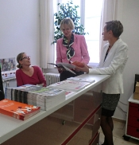

Herzlich willkommen!
Nehmen Sie uns ruhig beim Wort! Wir sind nicht nur mit dem Verstand, sondern auch mit dem Herzen bei der Sache, wenn es darum geht, interessierten Ehemaligen, Freunden und Förderern der Universität Heidelberg einen angenehmen Rahmen für ihre Kontakte untereinander und zu ihrer Alma Mater zu bieten.

Als gemeinnütziger Förderverein gestalten und unterstützen wir seit vielen Jahren den Dialog und Erfahrungsaustausch mit allen, die sich der Ruprecht-Karls-Universität Heidelberg und der Stadt, die seit über 625 Jahren ihre Heimat bildet, verbunden fühlen. Dabei arbeiten wir Hand in Hand – und seit 2010 auch Tür an Tür – mit Heidelberg Alumni International, dem weltumspannenden Alumni-Netzwerk der Ruperto Carola.
Haben auch Sie ein Herz für die Universität Heidelberg? Egal, auf welche Weise Sie sich der alten, aber quicklebendigen Dame Ruperto Carola verbunden fühlen – sei es durch das Studium, die Promotion, den Beruf oder einfach durch die Liebe zur Stadt –, mit einer Mitgliedschaft in der Gesellschaft der Freunde Universität Heidelberg e.V. können Sie dieser Verbundenheit sichtbar Ausdruck verleihen.